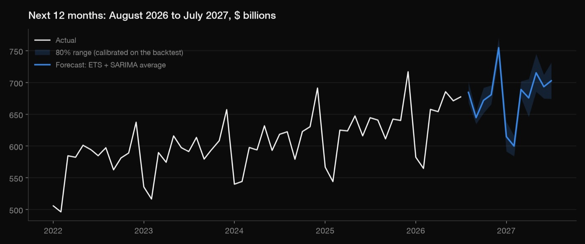

Python · Forecasting · 2026-10
US Retail Sales Forecast
Forecasting monthly US retail sales: the seasonal pattern, a fair test of five methods on months they hadn't seen, and the next 12 months with honest ranges.

01 — The problem
Retailers, suppliers and lenders all plan around one question: how much will people spend over the next year, month by month? Monthly retail sales swing hard with the calendar (every December spikes, every February sags), so a forecast has to get the seasonal shape right before it gets the trend right. And a forecast is only worth something if you know how wrong it tends to be.
02 — What I built
A Python forecasting pipeline on the US Census Bureau's monthly retail sales (January 1992 to July 2026, via FRED):
- Exploration: long-run growth, a seasonal index for each calendar month, and year-over-year growth.
- Five methods: two simple baselines, Holt-Winters (ETS), SARIMA, and the average of the last two.
- A fair test: a rolling-origin backtest that scores every method on months it hadn't seen.
- The forecast: the winner refitted on all data, with the model's 80% range and one calibrated on the backtest's real errors.
- A check script and a one-page report where every number is read from the saved results.
03 — How it was built
- 01
Download the series
One CSV from FRED, the St. Louis Fed's public data site, with no API key: the Census Bureau's "Retail Sales: Retail Trade", not seasonally adjusted. Not adjusted on purpose: the seasonal swings are part of what the forecast has to predict.
- 02
Look before modeling
Sales grew about 4.51% a year from 1992 to 2025. A seasonal index (each month divided by a centered 12-month average, with 2020-21 left out) shows December 16.6% above an average month and February 11.3% below. The pandemic is the one real break: April 2020 was -14.8% below a year earlier.
- 03
Test five methods on months they hadn't seen
From 14 quarter-ends between March 2022 and mid-2025, each method saw only the history up to that date, forecast the next 12 months, and was scored against what really happened: 168 forecasts per method. Scores are MAPE (average % error), MASE (error relative to "same month last year"; below 1 is better) and bias. The two statistical models were tied, so I also tested their average, which won.
for origin in quarter_ends(2022-03 .. 2025-06): train = sales[:origin] # only the past actual = sales[origin+1 : origin+12] # the 12 months it must predict for name, model in MODELS.items(): forecast = model(train, h=12) record(name, origin, forecast, actual) - 04
Notice the ranges are too wide
The models also give 80% ranges. In the backtest those held the real value 96.43% of the time, not 80%: too cautious, most likely because the 2020-21 swings sit in the training data. So the final forecast also carries a range built from the backtest's real errors at each horizon.
- 05
Forecast the next 12 months
The averaged model, refitted on everything through July 2026, forecasts $8,127 billion from August 2026 to July 2027: 4.9% more than the previous 12 months. December 2026 peaks at $754.7 billion.
- 06
Check it and write it up
check.pyasserts that the data has no gaps, that the seasonal index averages 100, that the baseline really is "same month last year", that the scoreboard recomputes from the saved errors, that no backtest forecast peeked past its start date, and that the forecast sits inside its ranges.report.pybuilds the one-page report from the saved results.
04 — Results
| Method | MAPE | MASE | Bias |
|---|---|---|---|
| ETS + SARIMA average | 1.81% | 0.65 | +0.41% |
| SARIMA | 1.96% | 0.70 | +1.18% |
| Holt-Winters (ETS) | 1.98% | 0.72 | -0.36% |
| Seasonal naive | 3.33% | 1.20 | -3.23% |
| Last year x growth | 3.39% | 1.19 | +2.05% |
- Best: the ETS + SARIMA average, at 1.81% average error, 35% smaller errors than "same month last year".
- Forecast: $8,127 billion over the next 12 months, +4.9%.
- Honest uncertainty: the models' own 80% ranges are too wide; the calibrated range, built from real errors, is about 40% narrower on average (36-80% of the model's width, depending on the month).
05 — What I'd do next
- Adjust for inflation, to separate price growth from volume.
- Add drivers such as income and consumer sentiment, and test whether they beat the pure time-series models.
- Re-run monthly as new data lands, and track the live forecast error.